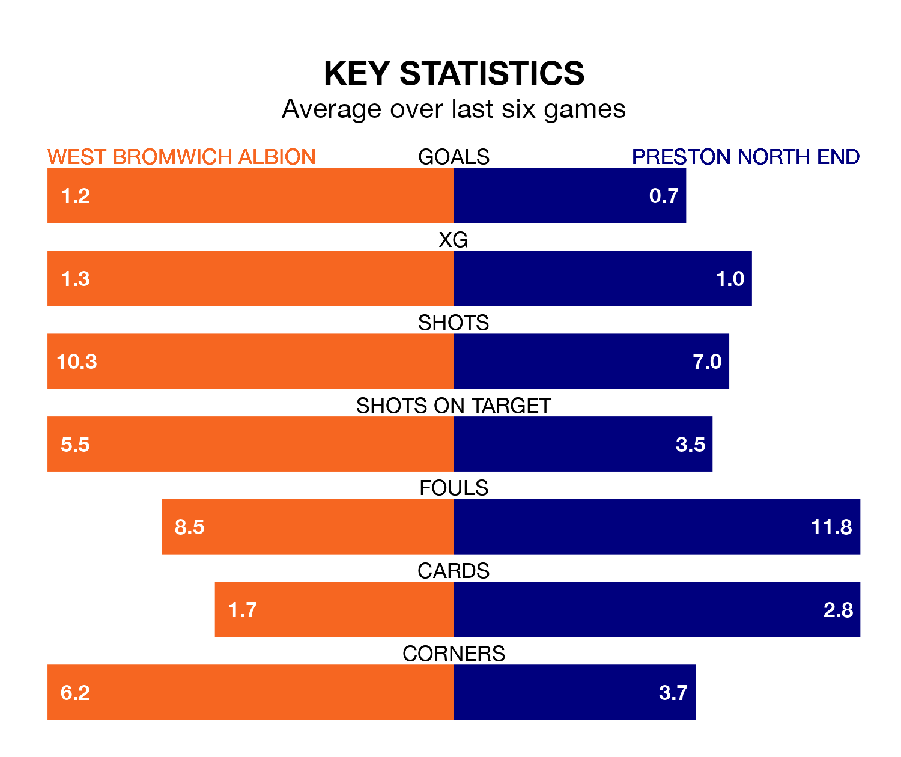

West Bromwich Albion are heavy favourites to keep all three points at home in Saturday lunchtime's kick-off against Preston North End.
The Baggies, who sit sixth in EFL Championship with 45 games played, are priced at 1.5 to seal victory at the Hawthorns.
Sitting four places and nine points behind them in the table, Preston are 6.0 to win with *Betting Company*, while the draw is at 3.9.
In Alex Palmer, West Bromwich can rely on one of the league's safest pair of hands. He has kept 17 clean sheets in his 45 appearances this season, and only one other 'keeper – Leeds United's Illan Meslier – has been able to prevent the opposition scoring on more occasions in EFL Championship.
In Preston's net, Freddie Woodman has 10 clean sheets in 43 games. He has conceded a goal every 70 minutes, 30% more often than the 92 minutes between goals for Alex Palmer.
In the last 10 years, West Bromwich and Preston have played each other on nine occasions. West Bromwich won six of them, Preston two, and they drew once.
On average, the Baggies scored 1.9 goals and the Lilywhites 0.8 in those matches.
Their last meeting was on September 30, when West Bromwich won 4-0 away.
With 67 goals in 45 games so far this season, Albion are scoring more than average in the league with 1.5 goals per game. And they are conceding fewer than average, letting in 47 goals at a rate of 1.0 per game.
North End, meanwhile, are below average scorers, with 1.2 goals per game, compared to a league average of 1.3. They have conceded 1.4 goals per game.
The Baggies are in disappointing form in EFL Championship, with one win and two draws from their last six games.
With a win and a draw over that period, the Lilywhites' form is slightly worse – they have taken four points from 18, compared to the hosts' five.
West Bromwich's last match was on Saturday, a 3-0 loss against Sheffield Wednesday.
Preston lost 3-0 against Leicester City last time out, on Monday.
Saturday's match will be refereed by Steve Martin, who has taken charge of five EFL Championship games so far this season, issuing no red cards and booking 27 players. He has awarded one penalty.
He is yet to oversee a match featuring either West Bromwich or Preston this season.
Updated: 12:00 (UTC), 02/05/24